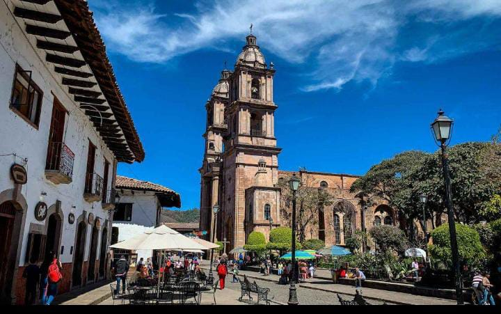
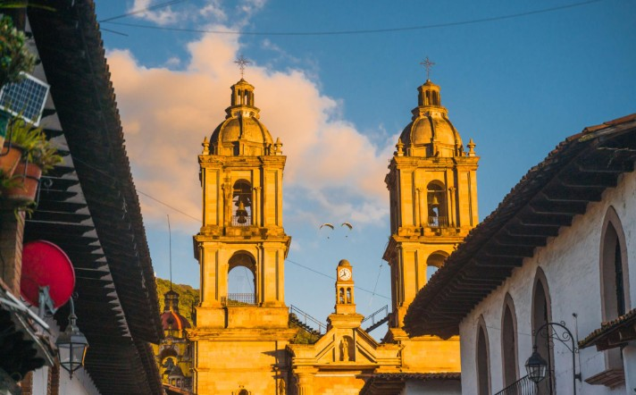
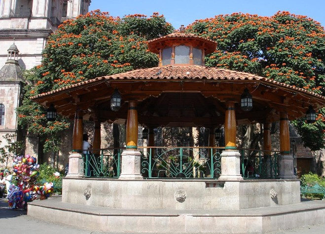

El centro de Valle de Bravo es uno de los lugares más representativos de este Pueblo Mágico. Se caracteriza por sus calles empedradas, construcciones tradicionales, plazas, iglesias, comercios y una gran riqueza histórica y cultural. Es un sitio donde se conserva parte de la identidad de sus habitantes y donde se reúnen tanto turistas como personas de la comunidad.

La Parroquia de San Francisco de Asís es uno de los edificios religiosos e históricos más importantes de Valle de Bravo. Está dedicada a San Francisco de Asís, considerado el santo patrono de la localidad. Características principales: Sus orígenes se remontan al siglo XVI. Destaca por sus grandes columnas de estilo neoclásico. Cuenta con dos torres que sobresalen en su fachada. En su interior conserva vitrales, imágenes religiosas y elementos históricos. Es un importante punto de encuentro para las celebraciones religiosas de la comunidad..

El kiosco se encuentra en el Jardín Central, también conocido como Plaza de la Independencia. Es uno de los sitios más visitados y reconocidos del Pueblo Mágico. Características principales: Se encuentra en el centro de la plaza principal. Está rodeado de jardines, flores y bancas. Es un punto de reunión para habitantes y turistas. Su entorno cuenta con restaurantes, cafeterías y los tradicionales portales. Es un lugar ideal para descansar, convivir y tomar fotografías.
